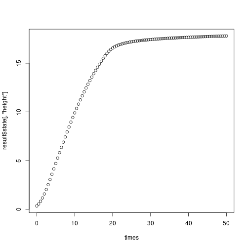
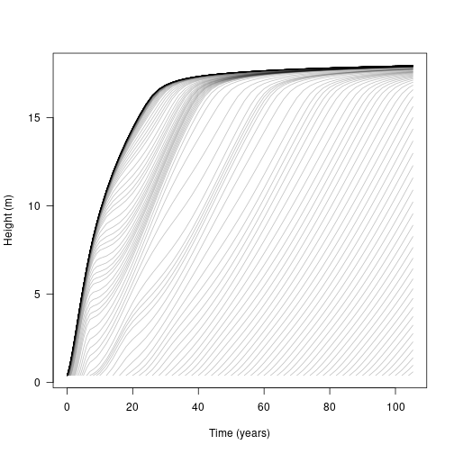
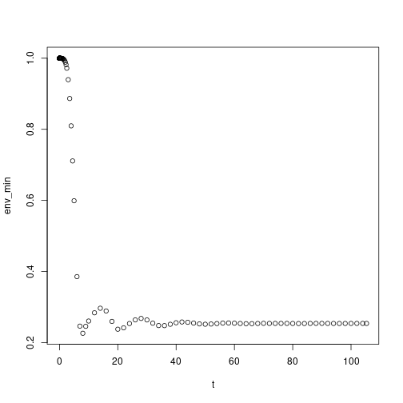
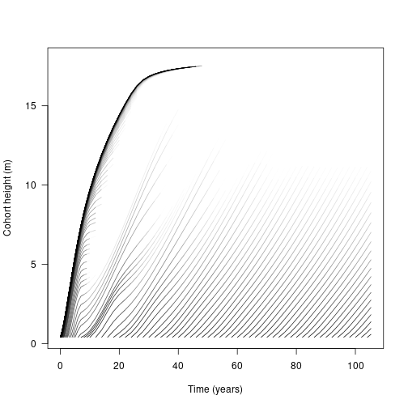

Background
This page contains a brief introduction to get you started with plant. More extensive information and tutorials are available, such as:
Details of the modelling approaches:
Modelling demography of individuals, patches and metapopulations The FF16 physiological strategy model
Details of using plant in R:
Individual level properties The cohort spacing algorithm Finding demographic equilibrium Patch level dynamics Patch level emergent properties Calculating fitness Modifying parameters of the physiological model Implementing a new strategy
Setup
First, load plant:
For a full list of available functions run library(help=plant), or see the online reference.
Strategy objects
Strategies are the corner stone of plant, describing the system of dynamical equations that determine processes such as growth, reproduction and mortality. The plant includes the FF16 strategy for you to get started.
A strategy object holds two kinds of parameters, those that relate to physiological processes of the model and control parameters that are used by the plant solver. The physological parameters are strategy specific, oftend describing traits or rates of individuals and their effects on the environment, while control parameters are usually general to all plant models.
s <- FF16_Strategy()
str(s)## List of 32
## $ lma : num 0.198
## $ rho : num 608
## $ hmat : num 16.6
## $ omega : num 3.8e-05
## $ eta : num 12
## $ theta : num 0.000214
## $ a_l1 : num 5.44
## $ a_l2 : num 0.306
## $ a_r1 : num 0.07
## $ a_b1 : num 0.17
## $ r_s : num 6.6
## $ r_b : num 13.2
## $ r_r : num 217
## $ r_l : num 198
## $ a_y : num 0.7
## $ a_bio : num 0.0245
## $ k_l : num 0.457
## $ k_b : num 0.2
## $ k_s : num 0.2
## $ k_r : num 1
## $ a_p1 : num 151
## $ a_p2 : num 0.205
## $ a_f3 : num 0.000114
## $ a_f1 : num 1
## $ a_f2 : num 50
## $ S_D : num 0.25
## $ a_d0 : num 0.1
## $ d_I : num 0.01
## $ a_dG1 : num 5.5
## $ a_dG2 : num 20
## $ control :List of 35
## ..$ plant_assimilation_adaptive : logi TRUE
## ..$ plant_assimilation_over_distribution: logi FALSE
## ..$ plant_assimilation_tol : num 1e-06
## ..$ plant_assimilation_iterations : num 1000
## ..$ plant_assimilation_rule : num 21
## ..$ plant_seed_tol : num 1e-08
## ..$ plant_seed_iterations : num 1000
## ..$ cohort_gradient_eps : num 1e-06
## ..$ cohort_gradient_direction : int 1
## ..$ cohort_gradient_richardson : logi FALSE
## ..$ cohort_gradient_richardson_depth : num 4
## ..$ environment_light_tol : num 1e-06
## ..$ environment_light_nbase : num 17
## ..$ environment_light_max_depth : num 16
## ..$ environment_rescale_usually : logi FALSE
## ..$ ode_step_size_initial : num 1e-06
## ..$ ode_step_size_min : num 1e-06
## ..$ ode_step_size_max : num 0.1
## ..$ ode_tol_rel : num 1e-06
## ..$ ode_tol_abs : num 1e-06
## ..$ ode_a_y : num 1
## ..$ ode_a_dydt : num 0
## ..$ schedule_nsteps : num 20
## ..$ schedule_eps : num 0.001
## ..$ schedule_verbose : logi FALSE
## ..$ schedule_patch_survival : num 6.25e-05
## ..$ equilibrium_nsteps : num 20
## ..$ equilibrium_eps : num 1e-05
## ..$ equilibrium_large_seed_rain_change : num 10
## ..$ equilibrium_verbose : logi TRUE
## ..$ equilibrium_solver_name : chr "iteration"
## ..$ equilibrium_extinct_seed_rain : num 0.001
## ..$ equilibrium_nattempts : num 5
## ..$ equilibrium_solver_logN : logi TRUE
## ..$ equilibrium_solver_try_keep : logi TRUE
## ..- attr(*, "class")= chr "Control"
## $ collect_all_auxillary: logi FALSE
## - attr(*, "class")= chr "FF16_Strategy"Individual plants
We can define one or more individuals for a given strategy. These are accessed using the Individual class:
ind = FF16_Individual()noting that FF16_Individual uses the FF16_Strategy by default (see ?FF16_Individual for more information).
We can see that our individual also shares the FF16_Environment (more on that soon) and a number of rates and functions for us to explore. The Individuals vignette describes the nuts and bolts of all these functions, for now we’re only going to grow and plot our individual’s height.
str(ind)## Classes 'Individual<FF16,FF16_Env>', 'Individual', 'R6' <Individual<FF16,FF16_Env>>
## Inherits from: <Individual>
## Public:
## .ptr: externalptr
## aux: function (name)
## aux_names: active binding
## aux_size: active binding
## clone: function (deep = FALSE)
## compute_competition: function (h)
## compute_rates: function (environment)
## establishment_probability: function (environment)
## initialize: function (ptr)
## internals: active binding
## lcp_whole_plant: function ()
## mortality_probability: active binding
## net_mass_production_dt: function (environment)
## ode_names: active binding
## ode_rates: active binding
## ode_size: active binding
## ode_state: active binding
## rate: function (name)
## reset_mortality: function ()
## set_state: function (name, v)
## state: function (name)
## strategy: active binding
## strategy_name: active bindingFirst we set a fixed environment (here 1.0 represents full light exposure in an open canopy) then use the grow_plant_to_time function to grow our individual for a range of time steps
env <- FF16_fixed_environment(1.0)
times <- seq(0, 50, length.out = 101)
result <- grow_plant_to_time(ind, times, env)Examining our result, we see a matrix of our state variables at each timestep
head(result$state)## height mortality fecundity area_heartwood mass_heartwood
## [1,] 0.3441948 0.000000000 0.000000e+00 0.000000e+00 0.000000e+00
## [2,] 0.5454996 0.005000003 7.685695e-22 6.109815e-09 1.525477e-06
## [3,] 0.8192984 0.010000006 7.231435e-21 3.084145e-08 1.092912e-05
## [4,] 1.1646766 0.015000010 6.354569e-20 1.146877e-07 5.694400e-05
## [5,] 1.5731336 0.020000016 5.663935e-19 3.542776e-07 2.372712e-04
## [6,] 2.0323819 0.025000025 5.101332e-18 9.417938e-07 8.167442e-04Which we can plot against time
plot(times, result$state[,"height"])
Patches
While we can torture our individual into all sorts of shapes and sizes, it’s often more interesting to see how many individuals interact. plant describes groups of individuals as Cohorts that interact within a shared Patch. Cohorts are groups individuals of roughly the same age. As cohorts grow, they often alter their environment. In the FF16 Strategy, individuals intercept light and shade other cohorts within the patch.
“Solving” a Patch therefore means stepping cohorts through time, integrating the rate of change on individuals to describe their state (such as height) and integrating the impact their state has on other cohorts in a patch. While it’s possible to solve a Patch for very long time periods, in reality they are more likely to be disturbed and reset. By default plant starts with a bare Patch and introduces successive cohorts, stepping them through time, until the average disturbance related mortality has wiped the patch bare again.
First we load some parameters for our FF16 Strategy and set the mean disturbance interval
params <- scm_base_parameters("FF16")
params$disturbance_mean_interval <- 30.0Then we load a patch by applying those parameters to a FF16 Species with a leaf mass area of 0.0825 (admittedly this could be simpler, but the Patch vignette explains what is going on)
patch <- expand_parameters(trait_matrix(0.0825, "lma"), params, mutant = FALSE)Then we run plant solver (SCM) to step the patch through time
result <- run_scm_collect(patch)If you’re working through this yourself, the SCM solver should be blazingly fast. Our results contain the timesteps the patch was solved at, the species in the patch, the environment at each timestep, p the patch parameters, and two entries related to the metapopulation of patches: seed rain and patch density
str(result, max.level = 1)## List of 6
## $ time : num [1:142] 0e+00 1e-05 2e-05 3e-05 4e-05 ...
## $ species :List of 1
## $ env :List of 142
## $ seed_rain : num 19.8
## $ patch_density: num [1:142] 0.0333 0.0333 0.0333 0.0333 0.0333 ...
## $ p :List of 13
## ..- attr(*, "class")= chr [1:2] "Parameters<FF16,FF16_Env>" "Parameters"We’ll explain these latter entries, but for now we focus species and the patch environment. The species object is a N-dimensional array describing each state, for each cohort at each timestep
str(result$species)## List of 1
## $ : num [1:7, 1:142, 1:141] 0.392 0.0107 0 0 0 ...
## ..- attr(*, "dimnames")=List of 3
## .. ..$ : chr [1:7] "height" "mortality" "fecundity" "area_heartwood" ...
## .. ..$ : NULL
## .. ..$ : NULLLet’s look at height. Each line represents the height of a cohort of individuals over time, beginning from the point at which the cohort recruited into the patch. Notably, the first cohorts follow much the same growth curve as our individual above, but subsequent cohorts have a bumpier ride, with growth slowing as the canopy closes over
t <- result$time
h <- result$species[[1]]["height", , ]
matplot(t, h, lty=1, col=make_transparent("black", 0.25), type="l",
las=1, xlab="Time (years)", ylab="Height (m)") To see the change in canopy opennes over time we can explore the patch Environment. Lets look at year 20 first, which corresponds to the 99th timestep in our model (not all timesteps are equal!) Our FF16 environment is described in terms of canopy openness, with 1.0 being completely open and 0.0 being completely shaded. We see that the shortest cohorts experience intense shading while taller cohorts enjoy full sunlight:
env <- result$env[[99]]
plot(env) If we look at the light environment at the forest floor (height = 0.0) we can see that it varies through time as older cohorts thin out and gaps form
If we look at the light environment at the forest floor (height = 0.0) we can see that it varies through time as older cohorts thin out and gaps form

This suggests that competition is density dependent and that our earlier figure of height over time is incomplete as many individuals will die out before reaching their potential maximum height. The final variable of our species state array is the log density of the cohorts, which we can use to weight the growth trajectories to show thinning
# Relativise the log densities onto (-4, max)
rel <- function(x, xmin = -4) {
x[x < xmin] <- xmin
xmax <- max(x, na.rm=TRUE)
(x - xmin) / (xmax - xmin)
}
d <- result$species[[1]]["log_density", , ]
rd <- rel(d)
# R doesn't seem to offer a way to plot lines that vary in colour, so
# this is quite roundabout using `segments`, shaded by the density at
# the first part of the line segment:
n <- length(t)
x <- matrix(rep(t, ncol(h)), nrow(h))
col <- matrix(make_transparent("black", rd), nrow(d))
plot(NA, xlim=range(t), ylim=range(h, na.rm=TRUE),
las=1, xlab="Time (years)", ylab="Cohort height (m)")
segments(x[-1, ], h[-1, ], x[-n, ], h[-n, ], col=col[-n, ], lend="butt")